Student | Time |
|---|---|
1 | 308 |
2 | 300 |
3 | 306 |
4 | 304 |
5 | 308 |
6 | 310 |
6 More Regression Concepts
Learning Objectives
By the end of this chapter, you should be able to:
- Explain what goodness of fit means in regression, and why statistical significance alone does not guarantee a useful model.
- Interpret \(R^2\) as the proportion of variation in an outcome explained by a regression model, and describe how it relates to \(SS_T\), \(SS_E\) and \(SS_R\)
- Distinguish between \(R^2\) and adjusted \(R^2\), and explain why adjusted \(R^2\) is preferred when comparing multiple regression models.
- Interpret regression coefficients when a predictor is binary, including how the meaning changes when the 0/1 coding is reversed.
- Use dummy variables to include a categorical predictor with more than two levels, identify the reference category, and interpret coefficients as comparisons to that reference group.
- Explain why using all \(k\) dummy variables (with an intercept) creates perfect multicollinearity, and state the “\(k-1\)” rule for categorical predictors.
- Describe why simple linear regression can perform poorly with time-series data (e.g., seasonality and autocorrelation), and recognise when time-series methods are more appropriate.
- Identify and interpret an interaction (moderation) effect in a regression model, including how to write and compare the implied regression equations for different groups.

6.1 Introduction
In the previous chapters, we learnt how to build regression models and how to use hypothesis testing to decide whether the relationships we observe are likely to be real or simply due to chance. We now know how to estimate effects, interpret coefficients, and assess statistical significance.
But real data rarely fits neatly into a single, simple regression line.
In practice, we often want to answer deeper questions, such as:
- How well does my model explain what is happening?
- What happens when predictors are categories rather than numbers?
- How do relationships change over time?
- Does the effect of one variable depend on another?
This chapter extends regression beyond the basics and shows how it adapts to more realistic and complex situations.
6.2 Goodness of fit
So far, we have focused on interpreting individual regression coefficients and using p-values to assess whether a relationship is statistically significant. However, a statistically significant relationship does not automatically mean that a model is useful or informative.* A model can detect a real association while still doing a poor job of explaining the outcome overall. This leads to an important next question:
how well does our regression model actually fit the data?
Measures of goodness of fit help us quantify how closely the model’s predictions align with the observed values, allowing us to assess how much of the variation in the outcome is explained by the model and to compare different regression models in a meaningful way.
6.2.1 \(R^2\) as a measure of model fit
One of the most commonly reported measures of goodness of fit in regression is \(R^2\), known as the coefficient of determination. While regression coefficients tell us about the direction and size of relationships between variables, \(R^2\) focuses on the model as a whole. Conceptually, \(R^2\) answers the following question:
How much of the variation in the outcome variable is explained by the regression model?
To understand this, recall that real-world data vary. Individuals differ in their outcomes for many reasons, not all of which are captured by the predictors in a model. A regression model attempts to explain some of this variability using the predictors we include. The remaining variation reflects factors not in the model, randomness, or measurement error.
The value of \(R^2\) lies between 0 and 1:
- An \(R^2\) close to 0 indicates that the model explains very little of the variation in the outcome.
- An \(R^2\) close to 1 indicates that the model explains a large proportion of the variation.
For example, an \(R^2=0.65\) means that 65% of the variability in the outcome variable can be explained by the predictors in the regression model, while the remaining 35% is unexplained.
6.2.2 Interpreting \(R^2\) in context
It is important to interpret \(R^2\) in context, rather than treating it as a universal benchmark of model quality.
In fields such as physics or engineering, very high \(R^2\) values are common because systems are tightly controlled. In contrast, in social, behavioural, and economic data — — human behaviour is influenced by many unobserved factors. As a result, moderate \(R^2\) values can still represent meaningful and useful models.
A low \(R^2\) does not necessarily imply that a model is “wrong.” It may simply reflect the complexity of the phenomenon being studied. Likewise, a high \(R^2\) does not guarantee that a model is appropriate or that the relationship is causal.
6.2.3 \(R^2\) and statistical significance
A common misconception is that a high \(R^2\) is required for regression coefficients to be statistically significant. In reality, these concepts address different questions:
- Statistical significance (via p-values) assesses whether a relationship is likely to exist in the population.
- \(R^2\) assesses how much of the outcome’s variability the model explains.
It is entirely possible to have:
- a statistically significant coefficient with a low \(R^2\), or
- a high \(R^2\) with some non-significant predictors.
This distinction reinforces why both coefficient-level inference and model-level fit should be considered together when interpreting regression results.
6.2.4 Computing \(R^2\)
Back in Chapter 2 we learnt the formula for the variance as:
\[ \frac{1}{n-1}\sum_{i=1}^{n} (X_i - \bar{X})^2 \] This formula (more importantly: the sum of squares) will help us to determine \(R^2\). Let’s use a small sample to explore this. Consider the time spent on the phone in one week (mins) by 6 random university students. In the table below, we compute the squared errors for each student:
We’ll begin by visualising this data on a scatterplot (and we can see that overall, there is variability bewteen the data points). If we plot the mean (\(306\)), we can see how far away each point is from this line (referred to as a deviation, or error):
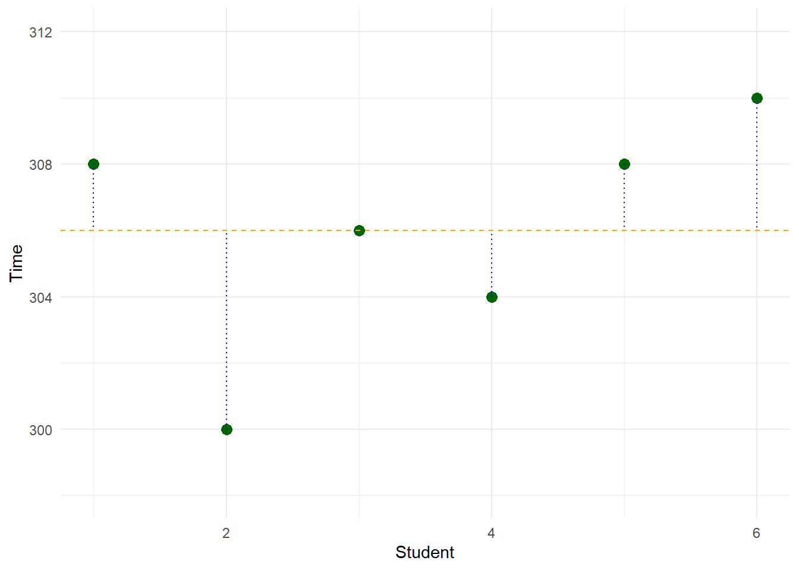
When we add up the squared errors, we get the sum of squares. Now at this point, we are only looking at the outcome variable (i.e. we haven’t included any predictors yet), so we can refer to this as the sum of squares total (\(SS_T\)):
\[ \begin{aligned} SS_T &= \sum_{i=1}^{n} (X_i - \bar{X})^2 \\ &= (308-306)^2+(300-306)^2+(306-306)^2+(304-306)^2+(308-306)^2+(310-306)^2 \\ &= 4+36+0+4+4+16 \\ &= 64 \end{aligned} \]
Note there are three sources of \(SS\) that we need to be aware of:
- \(SS_T\) (Sum of Squares Total)
- \(SS_E\) (Sum of Squares Error)
- \(SS_R\) (Sum of Squares Regression)
In this example, we have computed \(SS_T=64\). In other words:
The total variability in “Time” is 64 units
Now suppose we build a regression model to predict Time based on number of social media friends (let’s call this variable Social). Suppose the data looks something like this:
Student | Time | Social |
|---|---|---|
1 | 308 | 110 |
2 | 300 | 115 |
3 | 306 | 120 |
4 | 304 | 125 |
5 | 308 | 130 |
6 | 310 | 135 |
And let’s suppose we used software to obtain the regression coefficients for this model to be:
\[Time=283.6+0.18(Social)\]
Using this regression equation, we can see what the model would have predicted Time to be for each student. And we can determine the \(SS\) using a similar approach to \(SS_T\). However, we refer to this as \(SS_E\) (Sum of Squares Error):
Student | Time | Social | Model | Error | Error2 |
|---|---|---|---|---|---|
1 | 308 | 110 | 283.6 + (0.18 x 110) = 303.4 | 4.6 | 18.5 |
2 | 300 | 115 | 283.6 + (0.18 x 115) = 304.3 | -4.3 | 21.2 |
3 | 306 | 120 | 283.6 + (0.18 x 120) = 305.2 | 0.8 | 0.3 |
4 | 304 | 125 | 283.6 + (0.18 x 125) = 306.1 | -2.1 | 6.3 |
5 | 308 | 130 | 283.6 + (0.18 x 130) = 307.0 | 1.0 | 0.4 |
6 | 310 | 135 | 283.6 + (0.18 x 135) = 307.9 | 2.1 | 0.9 |
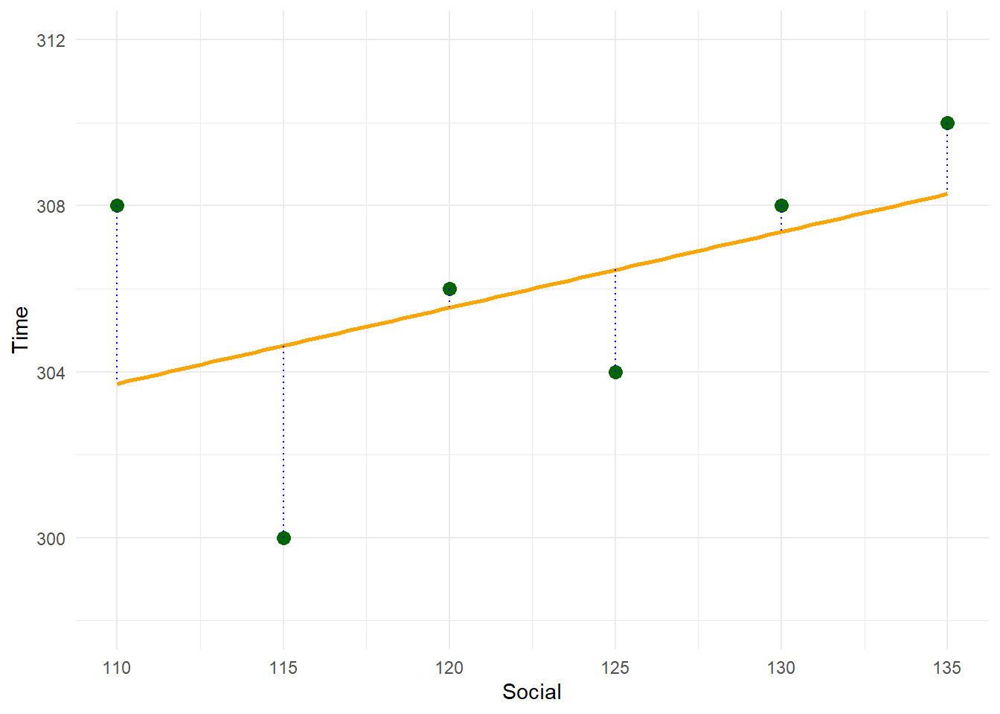
\[ \begin{aligned} SS_E &= \sum_{i=1}^{n} (X_i - \bar{X})^2 \\ &= (308-303.4)^2+(300-304.3)^2+(306-305.2)^2+(304-306.1)^2+(308-307.0)^2+(310-307.9)^2 \\ &= 18.5+21.2+0.3+6.3+0.4+2.9 \\ &= 49.4 \end{aligned} \] With these two sources of error (\(SS_T\) and \(SS_E\)), we can determined \(SS_R\). This is because
\[SS_T=SS_E+SS_R\]
Therefore:
\[SS_R=SS_T-SS_E\]
And because we have calculated \(SS_T\) and \(SS_E\) to be 64 and 49.4, respectively, we can solve \(SS_R\) to be:
\[SS_R=64-49.4=14.6\]
More importantly, if we take the ratio of \(SS_R\) and \(SS_T\), we can express how much of the variance in our outcome is explained by the regression model, rather than left unexplained by random variation. This is called the coefficient of determination, or \(R^2\).
\[ \begin{aligned} R^2 &= \frac{SS_R}{SS_T} \\ &= \frac{14.6}{64} \\ &= 0.229 \end{aligned} \]
In this example, we can interpret this as:
22.9% of the variation in time on the phone can be explained by this model.
Note: \(R^2\) is more suitable when we are dealing with simple linear regression. For multiple linear regression, we should use \(\text{Adjusted } R^2\). This is because \(R^2\) will always increase (or stay the same) when additional predictors are added to a model, even if those predictors contribute little or no meaningful explanatory power, whereas adjusted \(R^2\) penalises unnecessary model complexity and provides a fairer measure of model fit.
We will learn how to compute \(\text{Adjusted } R^2\) in the Excel section of this chapter.
6.3 Regression with a binary predictor
Up to this point, all of our regression examples have used numeric predictors. In these settings, interpretation is relatively straightforward: a regression coefficient represents the expected change in the outcome associated with a one-unit increase in the predictor, holding all other variables constant.
However, many important variables in real data are categorical rather than numeric. Examples include treatment group, employment status, or whether a customer is new or returning. Regression can still be used in these situations, but the interpretation of the coefficients changes.
We begin with the simplest categorical case: a binary predictor, which takes only two possible values. Suppose we are interested in understanding job satisfaction among employees. For each employee, we record:
- Job satisfaction (measured on a numeric scale)
- Income (numeric)
- Years at company, coded as a binary variable:
- 0 = less than 4 years
- 1 = 4 years or more
\[\text{Job Satisfaction} =\beta_0+\beta_1\text{Income}+\beta_2 \text{Years}\]
Suppose we ran a regression model on some data and determined the coefficients to be:
\[\text{Job Satisfaction} =7.2953+0.001(\text{Income})+ 3.4714 (\text{Years})\]
Let’s interpret what the coefficient for Years (here = 3.4717) actually means by comparing two people with different codes for this variable, but keeping everything else constant:
- Person A
- Income: \(75,000\)
- Years: “Less than 4” (0)
- Person B
- Income: \(75,000\)
- Years: “More than 4” (1)
If we substitute these values into the model for each person, we can determine their predicted job satisfaction scores:
\[\text{Job Satisfaction}_A =7.2953+0.001(\text{Income})+ 3.4714 (\text{0})=14.7953\] \[\text{Job Satisfaction}_B =7.2953+0.001(\text{Income})+ 3.4714 (\text{1})=18.2667\]
The difference between the two predictions (18.2667 – 14.7953) is equal to the coefficient for years (3.4714). Therefore, we can interpret this coefficient as:
Job satisfaction is 3.4714 points higher, on average, for employees who have been at the company for more than 4 years, compared to those who have been at the company less than 4 years, when income is controlled for.
Now, what if we had used different codes? E.g. what if we switched the 0s and 1s the other way?
- Years at company, coded as a binary variable:
- 1 = less than 4 years
- 0 = 4 years or more
In this case, the coefficients for the other terms might change, but the coefficient for Years will remain the same. The only difference is that the direction (i.e. positive or negative) will switch. For example, running a regression analysis on the same data, but switching the codes for Years would yield us the following:
\[\text{Job Satisfaction} =10.7668+0.001(\text{Income})- 3.4714 (\text{Years})\]
If we take the same two people from before, but now with the codes reversed:
- Person A
- Income: \(75,000\)
- Years: “Less than 4” (1)
- Person B
- Income: \(75,000\)
- Years: “More than 4” (0)
And substitute these values into the model for each person with the new model:
\[\text{Job Satisfaction}_A =10.7668+0.001(\text{Income})- 3.4714 (\text{1})=14.7953\]
\[\text{Job Satisfaction}_B =10.7668+0.001(\text{Income})- 3.4714 (\text{0})=18.2667\]
Notice here that the predictions work out to be exactly the same as above. And that the difference between the two predictions (18.2667 – 14.7953) is equal to the coefficient for years (3.4714).
6.4 Regression with a categorical predictor ((k > 2) levels)
The binary predictor case works neatly because there are only two groups. But in many real-world problems, categorical variables have more than two categories. Common examples include job position, education level, or type of contract. Regression can still be used in these situations — but we need to be more careful about how the variable is represented in the model.
Suppose we extend our job satisfaction example by including job position as a predictor, with three possible levels:
- Clerical
- Labourer
- Manager
Our goal is to understand how job satisfaction differs across these roles, while still controlling for income.
6.4.1 Choosing a reference level
A categorical variable with three levels does not correspond to a single numeric coefficient. Instead, regression works by comparing groups to a reference level (also called the baseline).
We must choose one category to act as this reference group. Suppose we choose:
Clerical as the reference level.
All other categories will be interpreted relative to clerical employees.
6.4.2 Dummy coding (indicator variables)
To include job position in the regression model, we create dummy variables (also called indicator variables). With three categories, we need two dummy variables:
Labourer- 1 = Labourer
- 0 = otherwise
- 1 = Labourer
Manager- 1 = Manager
- 0 = otherwise
- 1 = Manager
Clerical employees are implicitly represented when both dummy variables are equal to 0.
The regression model can be written as:
\[ \text{Job Satisfaction} = \beta_0 + \beta_1 \text{Income} + \beta_2 \text{Labourer} + \beta_3 \text{Manager} \]
6.4.3 Interpreting the coefficients
Under this coding:
- \((\beta_1)\) represents the predicted job satisfaction for every unit increase in income, holding position constant.
- \((\beta_2)\) represents the expected difference in job satisfaction between labourers and clerical employees, holding income constant.
- \((\beta_3)\) represents the expected difference in job satisfaction between managers and clerical employees, holding income constant.
Once we include a categorical predictor, the coefficients should be interpreted as group differences relative to the reference category, rather than as “per-unit increases”.
As an example, suppose we used software to fit the model, and we determined the coefficients to be:
\[ \text{Job Satisfaction} = 6.20 + 0.002\,(\text{Income}) - 1.50\,(\text{Labourer}) + 2.80\,(\text{Manager}) \] When can interpret each term in this equation as:
- Income \((\beta_1 = 0.002)\)
For every $1 increase in income, predicted job satisfaction increases by 0.002 points, on average, holding job position constant. - Labourer \((\beta_2 = -1.50)\)
Labourers are predicted to have job satisfaction scores that are 1.50 points lower than clerical employees, on average, holding income constant. - Manager \((\beta_3 = 2.80)\)
Managers are predicted to have job satisfaction scores that are 2.80 points higher than clerical employees, on average, holding income constant.
6.4.4 Why we cannot include all three positions as predictors
A natural question at this point is:
Why don’t we just include three dummy variables — one for clerical, one for labourer, and one for manager?
For example:
\[ \text{Job Satisfaction} = \beta_0 + \beta_1 \text{Income} + \beta_2 \text{Labourer} + \beta_3 \text{Manager} + \beta_3 \text{Clerical} \]
If we attempted this, we would run into a problem known as perfect multicollinearity. This occurs because, for every observation:
\[ \text{Clerical} + \text{Labourer} + \text{Manager} = 1. \]
This creates redundancy in the predictors, meaning the regression model cannot estimate all coefficients uniquely.
More advanced: why the model becomes rank deficient (matrix view)
The maths for this is beyond the scopes of this unit, but for those interested, consider that linear regression can be written in matrix form as:
\[ \mathbf{y} = \mathbf{X}\boldsymbol{\beta} + \boldsymbol{\varepsilon}. \]
If we include an intercept, income, and three dummy variables (clerical, labourer, manager), then for three example employees (A), (B), and (C), the design matrix would look like:
\[ \mathbf{X} = \begin{bmatrix} 1 & \text{Income}_A & 1 & 0 & 0 \\ 1 & \text{Income}_B & 0 & 1 & 0 \\ 1 & \text{Income}_C & 0 & 0 & 1 \end{bmatrix}. \]
For every row, exactly one of the three dummy variables equals 1 and the other two equal 0. Therefore:
\[ \text{Clerical} + \text{Labourer} + \text{Manager} = 1 = \text{Intercept}. \]
This means:
\[ \text{Column 3} + \text{Column 4} + \text{Column 5} = \text{Column 1}. \]
In other words, one column of the design matrix is an exact linear combination of the others. The matrix () is therefore rank deficient (it does not have full rank).
Ordinary least squares (OLS) estimation relies on:
\[ \hat{\boldsymbol{\beta}} = (\mathbf{X}^\top \mathbf{X})^{-1} \mathbf{X}^\top \mathbf{y}. \]
When \(\mathbf{X}\) is rank deficient, the matrix \(\mathbf{X}^\top \mathbf{X}\) is singular (non-invertible), so OLS regression cannot compute unique coefficient estimates.
In practice, statistical software will typically return an error or warning such as:
- “Coefficients are not uniquely determined”
- “Model matrix is rank deficient”
In Excel, the model will still run, but one of the rows will have an error:

6.4.5 The fix: use (k - 1) dummy variables
To avoid this issue, we must always include only (k - 1) dummy variables for a categorical predictor with (k) levels, treating the remaining category as the reference level.
With three job positions, we include two dummy variables (e.g. labourer and manager), and clerical becomes the baseline group.
6.4.6 Does the reference level matter?
The choice of reference level affects how we interpret the coefficients, but it does not change the fitted values or predictions produced by the model. Changing the reference category simply changes which comparisons appear explicitly in the regression output.
6.5 Regression with time-series
Up to this point, our independent variables (IVs) have been either continuous (such as income or years at the company) or categorical (such as position coded with dummy variables).
However, when we work with time series data, the situation is quite different. Time carries a natural sequential order, and the relationships between observations often depend on their position in that sequence.
Unlike income or years of experience, which can vary independently across individuals, time introduces autocorrelation - today’s outcome is usually related to yesterday’s.
As an example, suppose I had some Google Trends data, where I wanted to see how popular was the search term AFL on Google. And, let’s suppose, I looked at this across a five year period. The table below shows the first and last five obervations in this data set.
Week | Time | afl |
|---|---|---|
2020-08-16 | 1 | 43 |
2020-08-23 | 2 | 52 |
2020-08-30 | 3 | 52 |
2020-09-06 | 4 | 57 |
2020-09-13 | 5 | 53 |
⋮ | ⋮ | ⋮ |
2025-07-20 | 258 | 47 |
2025-07-27 | 259 | 48 |
2025-08-03 | 260 | 53 |
2025-08-10 | 261 | 53 |
2025-08-17 | 262 | 42 |
If we were to plot the data it shows a very obvious seasonal pattern, where AFL interest is low in Q1 and Q4 of any given year (because it’s the off-season), and high during Q2 and Q3 (within season).
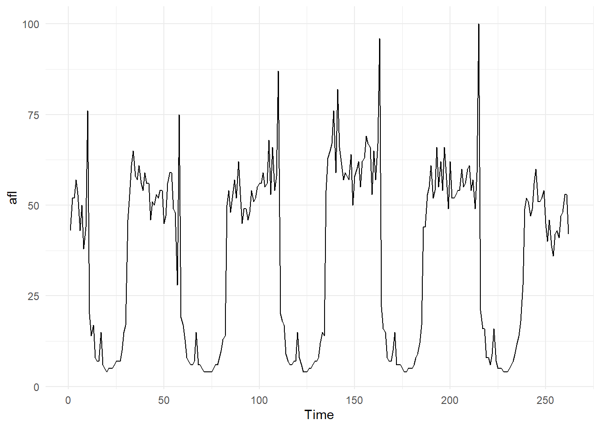
Now, suppose we modelled afl as a regression model (using Time as our predictor). Visually, this might look like:
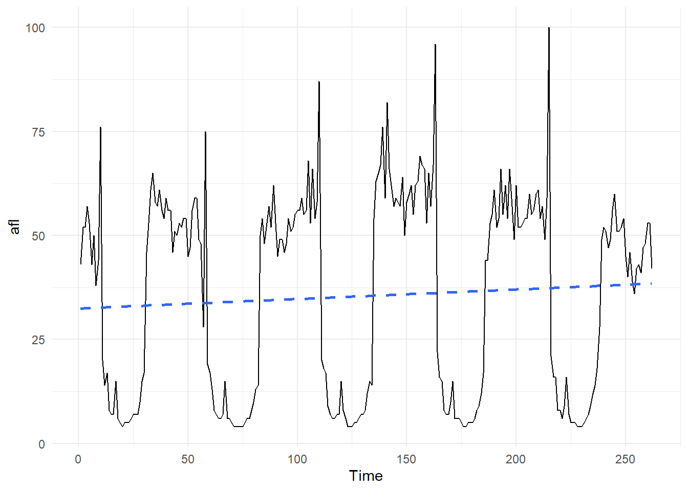
Notice here that this model, which is a straight line, is only picking up on the trend of the data. It does a very poor job of predicting actual afl interest for most of the data. As an example, suppose the fitted model was:
\[afl=32.45+0.023(Time)\]
And suppose we wanted to predict afl interest at time = 62 (which was 17/10/2021). The predicted value would be:
\[afl=32.45+0.023(62)=33.876\]
This is quite different to the actual value of 8:
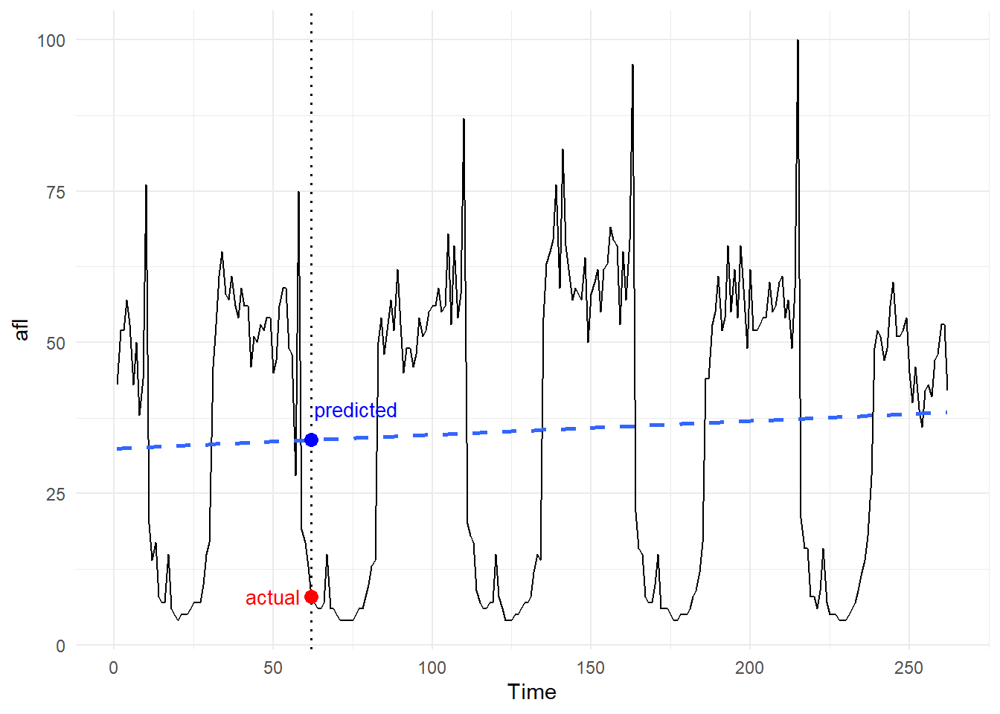
In future units, you will learn about time-series analysis, which is a more appropriate technique for handling this type of data. In this unit, ETC1000, you just need to be aware of this limitation when constructing your regression models.
As an example, consider the image below. Both panels use the exact same data (afl over time). The panel on the left is fitted with a linear regression model, and has made a linear forecast for the next 52 weeks. The panel on the right is a time series model, and it’s forecast is much more reflective on the actual data:
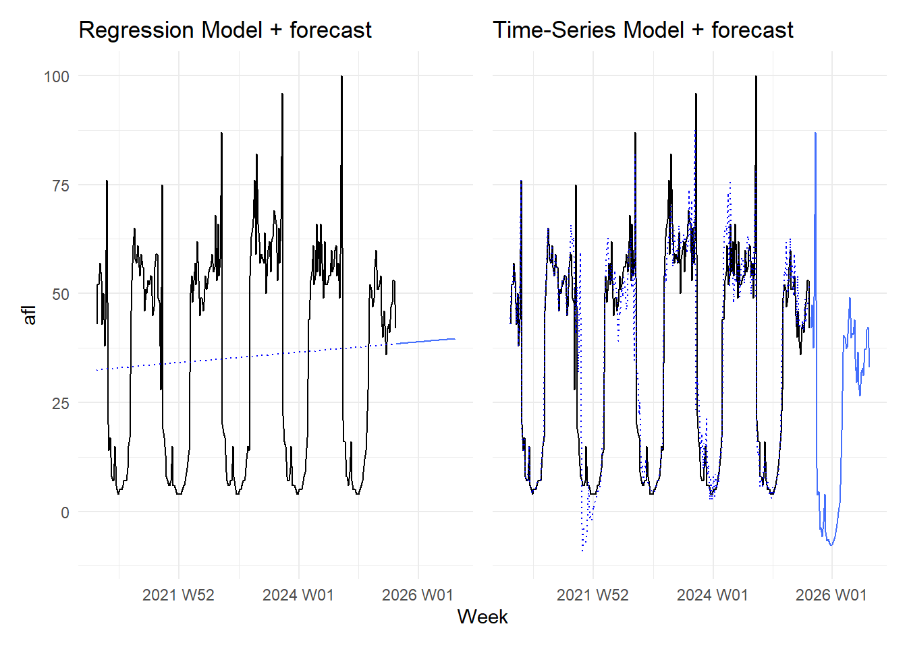
6.6 Interaction Effects
Thus far, our regression models have only considered additive effects, where each predictor is assumed to influence the outcome independently of the others. These are sometimes referred to as main effects. Under this assumption, the effect of a predictor — such as income, years at a company, or job position — is the same for all individuals, regardless of the values of other variables in the model.
In many real-world situations, however, this assumption is too simplistic. The relationship between a predictor and the outcome may depend on another variable. For example, an increase in income may have a different impact on job satisfaction for managers than it does for clerical staff, or the effect of time at a company may vary across roles. Interaction effects allow us to model these conditional relationships explicitly, extending regression beyond “average effects” and enabling more nuanced and realistic interpretations.
As an example, suppose a team of scientists recruited 40 high school students who enjoyed playing violent video games on a regular basis. They were asked to keep a record of how many hours of violent video games they played in one week. In addition, they had to complete a (pre-post) aggression questionnaire, where higher scores represented higher levels of aggression.
In this example, the researchers are investigating if time spent playing violent video games is associated with aggression. Graphically, this could be expressed as predictor \(\longrightarrow\) Outcome (a standard one-one relationship):
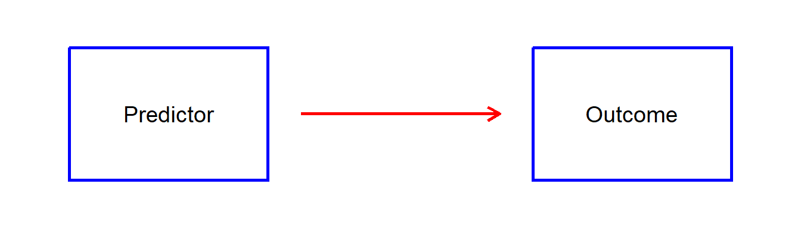
Interactions occur when we believe a third variable (usually called a moderator) can influence that one-to-one relationship:
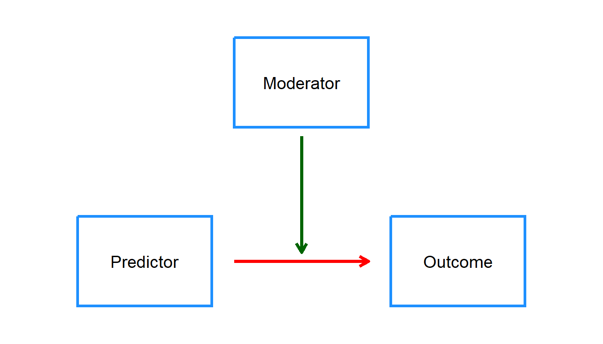
In our current example, the main effect is:
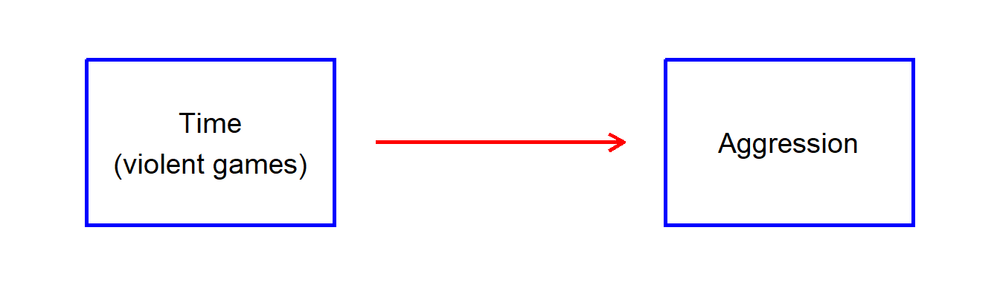
In our current dataset, if we consider just the relationship between Time and Aggression, we can observe a positive linear trend line (i.e. the more time one plays violent video games \(\longrightarrow\) the higher the aggression score), see the left panel below. However, suppose there was a third variable, History of Family Violence (yes / no). And we fitted separate models for each group. We can see that depending on whether or not the participant had a history of family violence, then the slope of the relationship is quite different (see the right panel).
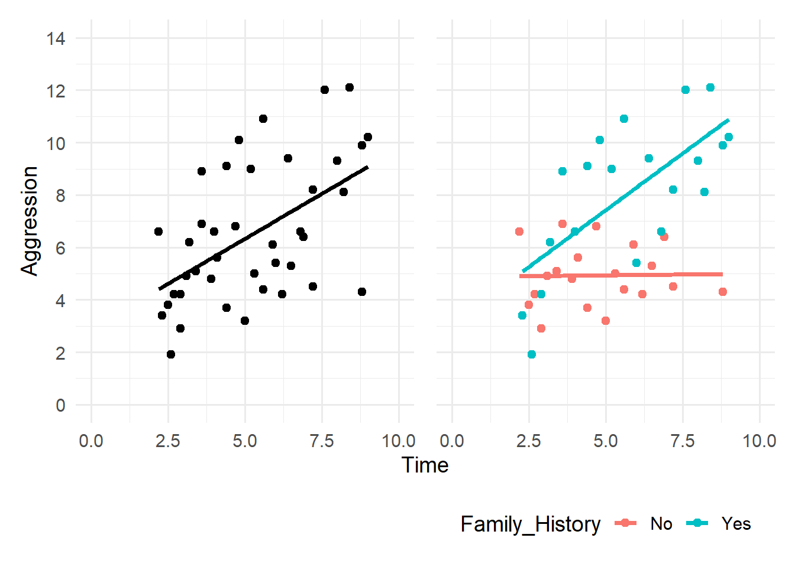
If we look at the relationship between Time and Aggression for those with a family history of violence,then it appears that there is a strong positive relationship between Time and Aggression. However, if we only look at the children from the No history of violence group, then we can see that there is a very weak relationship between Time and Aggression. Given these differences, using the original scatter plot (left-panel) would not paint a clear picture of what is really happening. Depending on the child’s group (Yes / No), the relationship between Time and Aggression is quite different!
Therefore, we would say that Family History is moderating the relationship between Time and Aggression
Mathematically, moderation (or interaction) is represented by including a product term in the regression model, formed by multiplying the two variables together (for example, Variable 1 × Variable 2). This interaction term allows the slope of one predictor to vary across levels of the other.
Suppose the first five rows of our data looked like the table below, where
Group(0 = No family history; 1 = Yes family history)
Group | Time | Aggression |
|---|---|---|
0 | 5.42 | 2.78 |
1 | 4.04 | 6.42 |
0 | 4.78 | 6.87 |
0 | 7.20 | 5.09 |
1 | 4.30 | 6.58 |
The interaction term is computed by multiplying Group and Time together. In this example:
Group | Time | Group.Time | Aggression |
|---|---|---|---|
0 | 5.42 | 0 x 5.42 = 0 | 2.78 |
1 | 4.04 | 1 x 4.04 = 4.04 | 6.42 |
0 | 4.78 | 0 x 4.78 = 0 | 6.87 |
0 | 7.20 | 0 x 7.2 = 0 | 5.09 |
1 | 4.30 | 1 x 4.3 = 4.3 | 6.58 |
We would then fit this as a term (effect) in our regression model. Suppose the coefficients table, for the full 40 children provided the following results:
. | Coefficients | SE | t.Stat | P.value |
|---|---|---|---|---|
Intercept | 3.854 | 0.902 | 4.274 | 0.0001 |
Group | -1.814 | 1.184 | -1.523 | 0.1311 |
Time | 0.239 | 0.173 | 1.384 | 0.1718 |
Group*Time | 0.663 | 0.219 | 3.023 | 0.0038 |
Using this table, we can determine the model to be:
\[ Aggression=3.85-1.81(Group)+0.24(Time)+0.66(Group\times Time) \]
And because we know how Group is coded (0 = No; 1 = Yes), we can construct seperate models for each group:
\[ \begin{aligned} Aggression_{Group:0} &= 3.85 -1.81(0)+0.24(Time)+0.66(0 \times Time) \\ &= 3.85+0.24(Time) \\ \end{aligned} \]
\[ \begin{aligned} Aggression_{Group:1} &= 3.85 -1.81(1)+0.24(Time)+0.66(1 \times Time) \\ &= 2.04+0.90(Time) \\ \end{aligned} \]
Notice here that the slope for Group 0 (No history of family violence) is relatively small (\(\beta=0.24\)), indicating little increase in Aggression as Time increases. By comparison, the slope for Group 1 (Yes history of family violence) is much larger (\(\beta=0.90\)), indicating a much larger increase in Aggression as Time increases. This is consistent with what we saw in our scatterplots earlier:
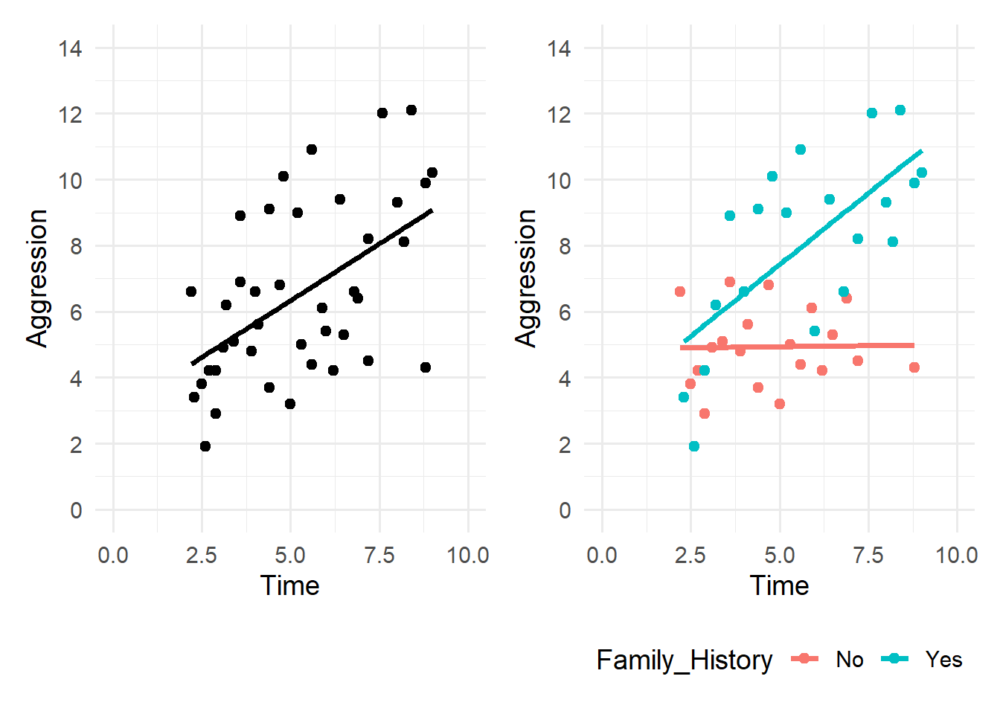
Finally, let’s look at the p-values for this scenario.
. | Coefficients | SE | t.Stat | P.value |
|---|---|---|---|---|
Intercept | 3.854 | 0.902 | 4.274 | 0.0001 |
Group | -1.814 | 1.184 | -1.523 | 0.1311 |
Time | 0.239 | 0.173 | 1.384 | 0.1718 |
Group*Time | 0.663 | 0.219 | 3.023 | 0.0038 |
The interaction term (Group × Time) is statistically significant (p = .0038), providing strong evidence that the effect of Time on Aggression differs between the two groups. In contrast, the main effect of Time alone (p = 0.1718) is not statistically significant, highlighting that the relationship between Time and Aggression cannot be adequately described by a single common slope. Together, these results confirm that Group moderates the relationship between Time and Aggression, which is precisely what we observed visually in the scatterplots.
6.7 Excel
In this section we will learn how to use Microsoft Excel to solve some of the concepts covered in this chapter. Begin by downloading the data file below and then follow the instructions by navigating through the screenshots.
6.7.1 Recap of Excel’s Data Analysis Tool Pack for Regression
Begin by loading the data into Excel.

Switch to the Data tab, select Data Analysis and choose Regression.

From there, specify your input Y (here: Job Satisfaction, so cells D1 to D31) and input X (here: Income, cells A1 to A31) ranges. Make sure “Labels” is selected, and specify your output range (e.g. F2).

Clicking OK, generates the output.

6.7.2 Multiple Regression with a Binary predictor
Have a look at the second column in the data set (Years at company), which is a numeric variable from 1 to 8. In this exercise we will transform this variable into a binary one with two categories:
- 0: Less than 4 years
- 1: 4 or more years
Insert a blank column to the right of the Years at company column. Call this new column Years_Cat. The easiest way to do this is to right click the current Colunm C and select “Insert”.

We need to write a formula that dichotomises Years at company into either 0 (if less than 4) or 1 (4 or more). In cell C2 type:
=IF(B2 < 4, 0, 1)and apply this to each cell in this column.

Switch to the Data tab, select Data Analysis and choose Regression. From there, specify your input Y (here: Job Satisfaction, so cells E1 to E31) and input X (here: Years_Cat, cells C1 to C31) ranges. Make sure “Labels” is selected, and specify your output range (e.g. G2).

Clicking OK, generates the output.

6.7.3 Multiple Regression with a Categorical predictor
Have a look at the variable Position. This is a categorical variable with three levels:
- Clerical
- Manager
- Labourer
In this excercise we will create three new columns using dummy coding for this variable and construct a multiple regression model.
Insert 3 blank columns to the right of the Position column. Call these columns, ‘Clerical’, ‘Manager’ and ‘Labourer’ respectively.

In cell D2 (Clerical) we can use the following formula to write a 1 if Position is Clerical, otherwise return a 0. Apply this formula to all cases in this column.
=IF(C2 = "Clerical", 1, 0)
Write and apply a similar formula for Managers (in cell E2).
=IF(C2 = "Manager", 1, 0)
Write and apply a similar formula for Labourers (in cell F2).
=IF(C2 = "Labourer", 1, 0)
Select one level to be the reference category. This level is not included into the model. For example, the screenshot below will use ‘Clerical’ as the reference

Switch to the Data tab, select Data Analysis and choose Regression. From there, specify your input Y (here: Job Satisfaction, so cells G1 to G31) and input X (here: Manager and Labourer, cells E1 to F31) ranges. Make sure “Labels” is selected, and specify your output range (e.g. I2).

Clicking OK, generates the output.

6.8 Summary
In this chapter, we extended regression beyond the “one predictor, one straight line” idea and explored several concepts that make regression more useful for real-world data.
First, we introduced goodness of fit, showing that statistical significance alone does not tell us whether a model is useful. We learnt that \((R^2)\) describes the proportion of variation in the outcome explained by the model, and we linked this idea back to the sum of squares framework (\(SS_T\), \(SS_E\), and \(SS_R\)). We also highlighted why \(R^2\) is most appropriate for simple linear regression, and why adjusted \(R^2\) is preferred in multiple regression settings where adding extra predictors can artificially inflate \(R^2\).
Next, we showed how regression can incorporate categorical predictors. With a binary predictor, coefficients are interpreted as differences between two groups (relative to whichever group is coded as 0). With a categorical predictor that has more than two levels, we learnt that regression requires dummy coding and a reference category. We also discussed why including all \(k\) dummy variables creates perfect multicollinearity, leading to a rank-deficient design matrix and preventing unique coefficient estimation.
We then explored regression with time series data, where a simple linear regression often captures only the overall trend and can miss important patterns such as seasonality.
Finally, we introduced interaction effects, where the effect of one predictor depends on the value of another. Using the violent games example, we saw how interactions appear as different slopes for different groups, how to compute the interaction term, how to write separate regression equations for each group, and how to interpret the key p-value for the interaction term as evidence of moderation.
6.9 Exercises
Question 1
A regression model predicting weekly phone time from number of social media friends produces:
\[ R^2 = 0.23 \]
(a) What does this value mean in context?
(b) Does \(R^2 = 0.23\) imply the model is “bad”? Explain briefly.
Click for Solutions
(a)
An \(R^2\) value of 0.23 means that 23% of the variation in weekly phone time is explained by the regression model. The remaining 77% of the variation is due to other factors, randomness, or measurement error.
(b)
No. It depends on the discipline. Moderate or low \(R^2\) values are common because outcomes are influenced by many unobserved factors. A model can still capture a meaningful relationship even if \(R^2\) is not large.
Question 2
You are told that for a regression model:
\[ SS_T = 80 \]
\[ SS_E = 50 \]
(a) Compute \(SS_R\).
(b) Compute \(R^2\).
(c) Interpret the result.
Click for Solutions
(a)
\[
SS_R = SS_T - SS_E = 80 - 50 = 30
\]
(b)
\[
R^2 = \frac{SS_R}{SS_T} = \frac{30}{80} = 0.375
\]
(c)
The regression model explains 37.5% of the variation in the outcome variable.
Question 3
A regression model predicting job satisfaction includes a binary variable:
\[ \text{Years} = \begin{cases} 0 & \text{less than 4 years} \\ 1 & \text{4 years or more} \end{cases} \]
The fitted model is:
\[ \text{Job Satisfaction} = 7.30 + 0.001(\text{Income}) + 3.47(\text{Years}) \]
(a) Interpret the coefficient 3.47.
(b) If the coding of Years is reversed, what happens to the sign of the coefficient?
Click for Solutions
(a)
Holding income constant, employees who have been at the company for 4 years or more are predicted to have job satisfaction scores that are 3.47 points higher, on average, than employees who have been at the company for less than 4 years.
(b)
If the coding is reversed, the sign of the coefficient will change, but the predicted values and group differences remain the same. Only the reference group changes.
Question 4
Job position has three levels: Clerical, Labourer, and Manager. Clerical is the reference group. The fitted model is:
\[ \text{Job Satisfaction} = 6.20 + 0.002(\text{Income}) - 1.50(\text{Labourer}) + 2.80(\text{Manager}) \]
Assume income is held constant.
(a) Interpret the coefficient −1.50.
(b) Interpret the coefficient 2.80.
(c) What values do the dummy variables take for a clerical employee?
Click for Solutions
(a)
Labourers are predicted to have job satisfaction scores that are 1.50 points lower than clerical employees, on average, holding income constant.
(b)
Managers are predicted to have job satisfaction scores that are 2.80 points higher than clerical employees, on average, holding income constant.
(c)
For clerical employees (the reference group):
\[ \text{Labourer} = 0 \]
\[ \text{Manager} = 0 \]
Question 5
A regression model examining aggression includes:
\[ \text{Group} = \begin{cases} 0 & \text{no family violence history} \\ 1 & \text{family violence history} \end{cases} \]
The fitted model is:
\[ \text{Aggression} = 3.85 - 1.81(\text{Group}) + 0.24(\text{Time}) + 0.66(\text{Group} \times \text{Time}) \]
(a) Write the regression equation for Group = 0.
(b) Write the regression equation for Group = 1.
(c) Interpret the interaction coefficient 0.66.
(d) If the p-value for the interaction term is 0.0038, what is the conclusion?
Click for Solutions
(a) For Group = 0:
\[ \text{Aggression} = 3.85 + 0.24(\text{Time}) \]
(b) For Group = 1:
\[ \begin{aligned} \text{Aggression} &= 3.85 - 1.81 + (0.24 + 0.66)(\text{Time}) \\ &= 2.04 + 0.90(\text{Time}) \end{aligned} \]
(c)
The interaction coefficient 0.66 means that the effect of Time on Aggression is 0.66 units larger for individuals with a family violence history compared to those without.
(d)
Since
\[ p = 0.0038 \]
there is strong evidence that the relationship between Time and Aggression differs by group, confirming that Group moderates the effect of Time on Aggression.